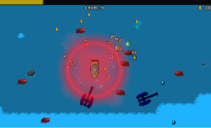

Survival Gameplay
Fight increasingly difficult enemies and try to survive for as long as possible.
A 2D survival game where players collect resources, upgrade their boat and fight increasingly challenging enemies in an attempt to survive for as long as possible.
July 2025Floodborne is a 2D survival game inspired by the Survivors-like genre, developed using Unity and C#. The game combines fast-paced combat, resource management and progression systems, challenging players to survive for as long as possible while improving their boat.
Defeating enemies rewards players with experience and gold. Experience allows players to level up during a run and choose between three upgrade options, while gold can be spent in an external shop to purchase boat improvements between runs. After approximately ten minutes, a Final Boss appears and relentlessly pursues the player, marking the end of the survival challenge.
Fight increasingly difficult enemies and try to survive for as long as possible.
Gain experience by defeating enemies and choose between three upgrade options whenever you level up.
Earn gold during runs and spend it in an external shop to improve the boat between attempts.
Scalable systems designed to support different enemy types and behaviours.
Modular systems for managing weapons and player upgrades, allowing gameplay elements to be expanded.
Performance-oriented systems for reusing game objects and managing enemy spawning.
The game was developed using Unity, with C# for gameplay programming and Visual Studio as the development environment.
